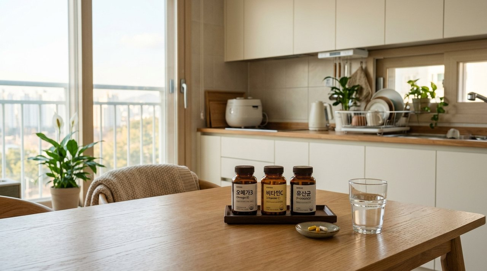
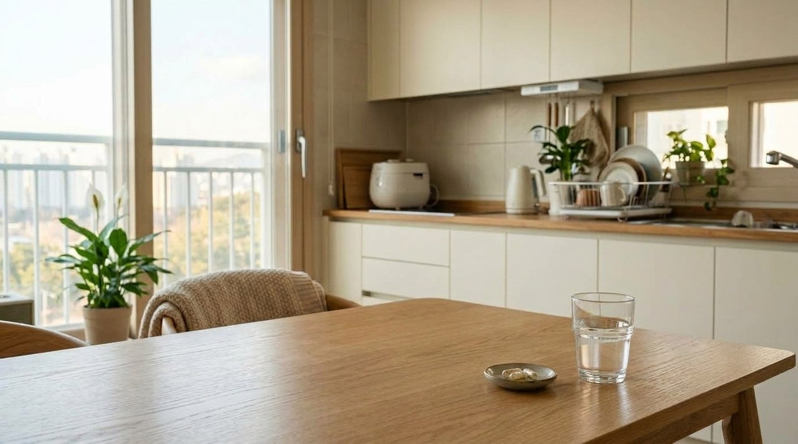
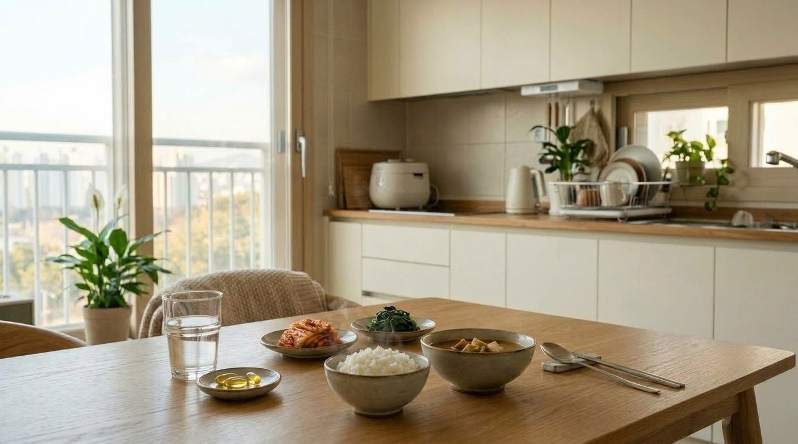
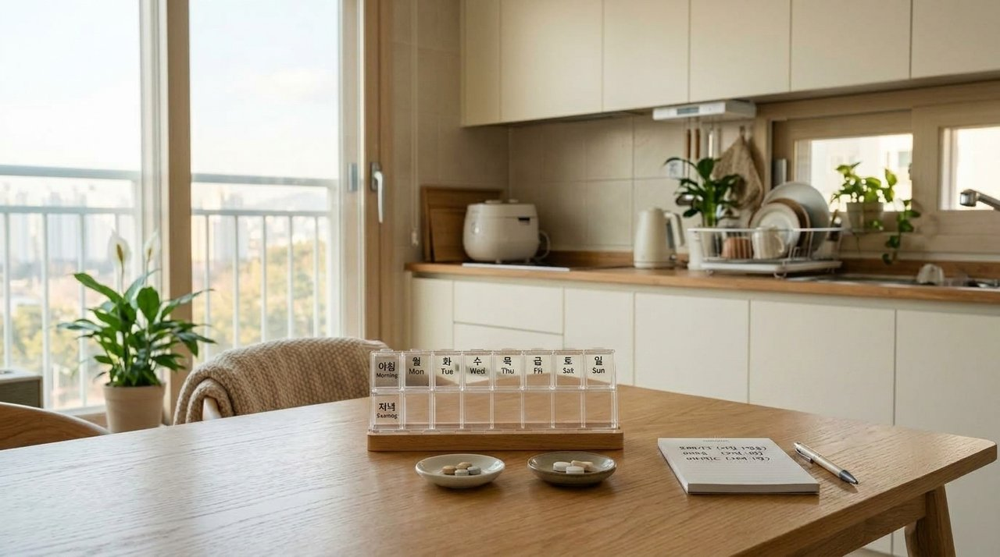
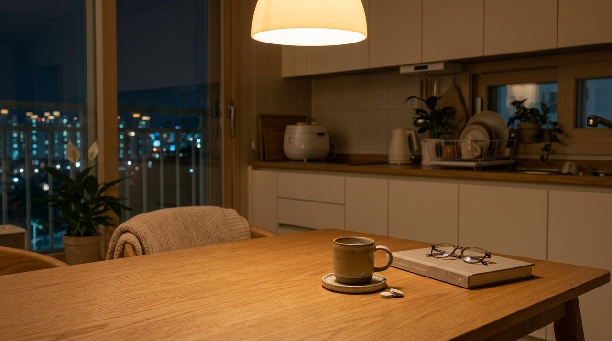

건강 관리를 위해 식탁 위에 영양제 통을 여러 개 구비해 두고, 아침마다 손바닥에 한꺼번에 쏟아붓듯 삼키는 분들이 적지 않습니다.
바쁜 일상 속에서 빠짐없이 챙겨 먹으려는 실천이지만, 성질이 서로 다른 영양소를 무작정 동시에 섭취하는 방식은 기대한 만큼의 효용을 거두기 어렵습니다.
영양소마다 체내에서 흡수되는 소화 장소와 분해 경로가 확연히 다르며, 서로의 흡수를 방해하는 상충 관계가 존재하기 때문입니다.
아침 공복부터 점심 식후, 그리고 저녁 취침 전까지 시간대별로 섭취 타이밍을 체계적으로 분리하는 생리학적 기준을 면밀히 살펴볼 필요가 있습니다.

잠에서 깬 직후의 인체는 장시간 공복 상태를 유지하여 위장 내부의 산도가 매우 높은 환경에 놓여 있습니다.
이러한 상태에서 특정 영양 성분을 빈속에 곧바로 들이부으면 위 점막 표면이 자극을 받아 찌르르한 불편함이나 메스꺼움을 겪을 수 있습니다.
반대로 어떤 영양소는 음식물이 전혀 없는 산성 환경에서 오히려 장까지 안전하게 도달하거나 흡수 효율이 극대화되기도 합니다.
결국 영양제의 가치는 몇 알을 먹느냐보다, 신체의 소화 효소와 담즙산 분비 흐름에 얼마나 부합하게 배치하느냐에 달려 있습니다.

유산균으로 대표되는 프로바이오틱스는 살아있는 생균 상태로 대장까지 안착해야 온전한 장내 유익 작용을 수행합니다.
식사 후에는 섭취한 음식물을 소화하기 위해 강한 위산이 쏟아져 나오므로, 생균의 생존율이 급격히 저하되는 문제가 나타납니다.
따라서 기상 직후 미온수를 1~2컵 천천히 마셔 밤새 분비된 위산을 씻어내고 산도를 희석한 직후 유산균을 섭취하는 순서가 적합합니다.
아울러 탄수화물과 단백질 대사를 돕는 수용성 비타민 B군 역시 오전에 섭취해야 낮 동안의 활력 증진에 효율적으로 기여합니다.
| 섭취 구분 | 해당 영양소 | 생리학적 흡수 원리 | 권장 타이밍 |
|---|---|---|---|
| 공복 권장 | 유산균 (프로바이오틱스) | 위산 희석 후 장 도달률 극대화 | 기상 직후 미온수 음용 후 |
| 공복 권장 | 비타민 B군 (복합체) | 수용성 활력 대사 효소 지원 | 아침 식전 (위장 약할 시 식후) |
| 식후 권장 | 오메가3 (불포화지방산) | 담즙산 분비 결합 및 비린내 완화 | 점심 또는 저녁 식사 직후 |
| 식후 권장 | 비타민 C (아스코르브산) | 위 점막 산도 자극 완충 작용 | 식사 중 또는 식후 즉시 |

오메가3와 비타민 A, D, E, K, 그리고 루테인은 물에 녹지 않는 전형적인 지용성 성분들입니다.
이들 성분은 췌장에서 분비되는 지방 분해 효소와 간에서 공급되는 담즙산이 함께 섞여 유화 과정을 거쳐야만 소장 점막을 통해 체내로 흡수됩니다.
만약 빈속에 오메가3 캡슐을 삼키면 유화 과정이 원활하지 않아 대부분이 흡수되지 못하고 배출되며, 특유의 비린 어취가 역류하여 불쾌감을 부릅니다.
따라서 균형 잡힌 지방질이 포함된 점심이나 저녁 식사를 마친 직후에 섭취해야 생체 이용 효율이 50% 이상 상승합니다.

서로 다른 영양소라 일지라도 소장 세포막에 위치한 동일한 수용체(DMT-1)를 통해 흡수되는 관계라면 치열한 경쟁이 발생합니다.
칼슘과 철분이 대표적인 사례로, 두 영양소를 동시에 복용할 경우 칼슘이 철분의 흡수 통로를 선점하여 철분 흡수율이 바닥 수준으로 억제됩니다.
이러한 미네랄 간섭 현상을 피하기 위해서는 철분을 아침 공복에 비타민 C와 함께 섭취하고, 칼슘은 저녁 식사 후로 분리하는 3시간 시차 규칙이 필수적입니다.
또한 녹차나 커피에 함유된 탄닌 성분 역시 미네랄과 결합해 불용성 침전물을 생성하므로 섭취 전후 1시간 동안은 카페인 음용을 삼가야 합니다.
| 상충 영양소 조합 | 상호 간섭 기전 | 동시 섭취 시 발생하는 현상 | 권장 분리 섭취법 |
|---|---|---|---|
| 칼슘 ↔ 철분 | 동일 2가 양이온 흡수 통로 경쟁 | 철분 생체 이용률 최대 80% 저하 | 철분(아침) / 칼슘(저녁) 3시간 분리 |
| 유산균 ↔ 고산도 비타민C | 강한 산성 환경에 의한 생균 사멸 | 장내 생존 도달률 급감 | 유산균(기상 직후) / 비타민C(식후) 분리 |
| 마그네슘 ↔ 고용량 칼슘 | 미네랄 흡수 통로 포화 경쟁 | 흡수 지연 및 묽은 변 가능성 | 2:1 균형 복합제 선택 또는 시간 분할 |

마그네슘은 근육의 불필요한 수축을 완화하고 중추 신경계의 긴장을 진정시키는 천연 이완 미네랄로 평가받습니다.
특히 뇌 속 신경전달물질의 균형을 안정화하고 수면 호르몬 대사를 보조하므로, 낮 시간대보다는 저녁 식후나 취침 1시간 전에 섭취하는 것이 유익합니다.
낮 동안 쌓인 정신적 피로와 다리의 뻐근함을 풀어주는 데 기여하여 야간 시간대의 편안한 휴식을 돕는 든든한 역할을 수행합니다.
따뜻한 물 한 잔과 함께 복용하면 흡수가 순조로워지며 위장에 전해지는 부담도 줄어들어 평온한 밤을 맞이할 수 있습니다.
소중한 몸을 위해 영양제를 선택했다면, 성분이 온전히 제 역할을 다할 수 있도록 시간을 나누는 지혜가 뒷받침되어야 합니다.
매일 아침 한 웅큼씩 털어 넣던 습관에서 벗어나 아침, 점심, 저녁의 골든타임을 맞춰가는 작은 배려가 일상에 맑은 에너지를 선사할 것입니다.